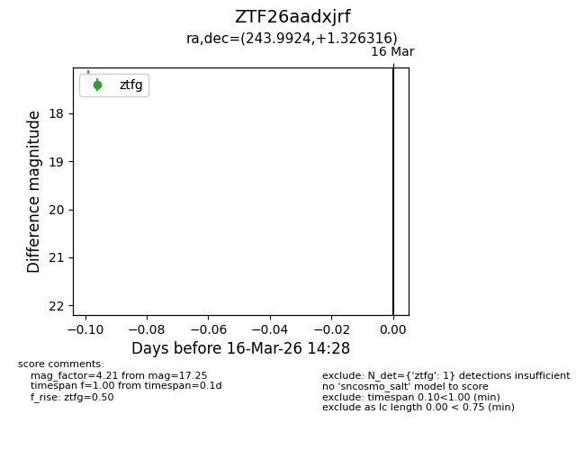
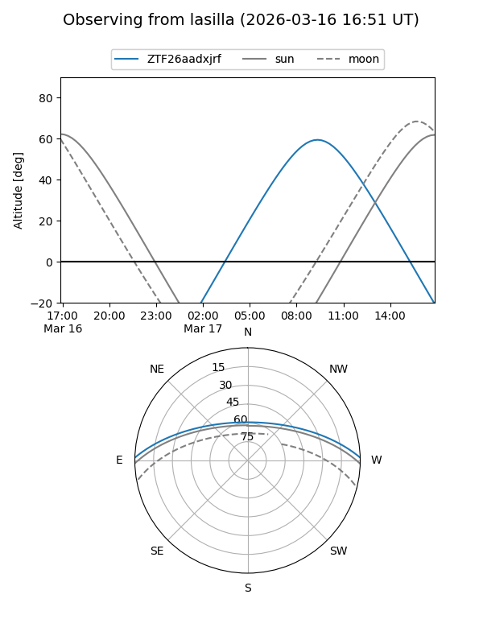
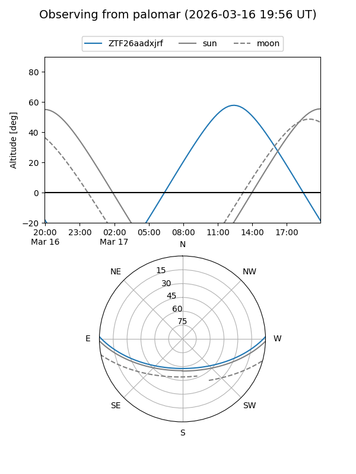

ZTF26aadxjrf
Target ZTF26aadxjrf at 2026-03-16 14:30
Aliases and brokers:
FINK: link
Lasair: link
ALeRCE: link
alt names
ZTF26aadxjrf (ztf,fink_ztf)
Coordinates:
equatorial (ra, dec) = 243.9924,+1.32632
equatorial (HMS+DMS) = 16:15:58.18,+01:19:34.74
galactic (l, b) = (14.1007,+34.67260)
Flags:
Photometry:
last ztfg=17.25
1 ztfg detections
Lightcurve

Visibility


Additional plots